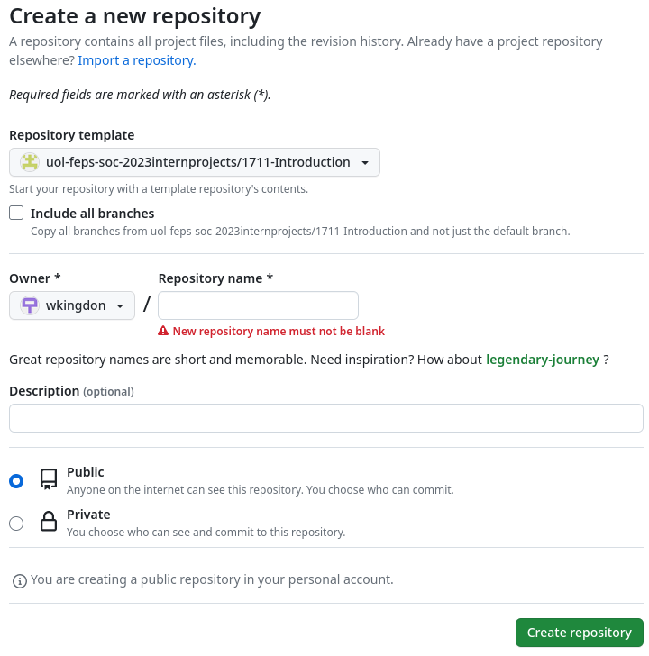

1: Intro to Codespaces and the terminal.
Aims
- Create a coding environment in Codespaces
- Understand common terminal vocabulary
- Be familiar executing commands in the terminal
- Understand a set of common and important commands
What is github Codespaces?
Github codespaces is a development environment for your code that is hosted in the cloud by github. It provides an interface very similar to the popular IDE vscode and is running in a linux environment.
The Codespace that you are about to create will be the key environment used to introduce you to the terminal, git, scripting and C programming.
Opening a Codespace
Follow these steps to create a new repository from a template and open it in codespaces. A repository is an online storage point for your project.
Visit this link, logged into your github account: https://github.com/uol-feps-soc-2023internprojects/1711-Introduction
From the use this template dropdown select the option to create a new repository.
- On the repository creation page, select your account as the owner and give the repo an appropriate and memorable name (We will refer to it as 1711-intro). You may add a description if you like. Once configured, confirm with the “create repository from template” button at the bottom of the page. This will redirect you to the repo homepage.

- On the repo homepage click on green button marked as code and select the tab in the popup reading Codespaces. Within this tab click on “Create codespace on main” this will open a new tab with your codespace.

- This environment will look very familiar to those who have used vs code before and is comprised of 3 main elements. The editor window, the file explorer and the terminal window: labelled in the image below.
More will be explained about git, github and version control in the future.
The terminal
The terminal is a window on a machine that allows for the input and output of text. The shell is the primary interface that is run within the terminal, creating a command line interface (CLI). Choice of shell will effect user experience but not functionality, common shells include: bash, zhs, and fish.
The prompt
As a user when you open a terminal you will be greeted by a prompt. On codespaces this prompt will often take the form @{user} -> workspace/{repository} $ whereas on a standard linux machine the prompt often takes the form {user}@{hostname} $.
Because of these differences most sources of information will simply show the prompt as the single $ that normally ends a prompt, it is important to remember that this symbol is not part of the command.
A Note on file systems
All the information on a computer is stored in a file system, organised into files and directories. All of you are familiar with this concept, however since this knowledge is fundamental to command line programming it is worth redefining the finer details.
This information is also specific to linux file systems that many of you may be less familiar with.
- Files are collections of related information, usually data or programs.
- In linux, files can be given extensions at the end of the name e.g.
.txtthough this acts a a signal to other users and programs rather than to the OS.
- In linux, files can be given extensions at the end of the name e.g.
- Directories, called folders in windows, are used to organise files.
- Directories branch out from the root directory in a hierarchical structure.
- The root directory is denoted with a
/
- The working directory is the current point in the file system that the user is at.
- Commands that the user runs will be executed at the working directory
- Paths are used to refer to files within a system. There are two key types of path.
- Absolute paths describe the series of subdirectories moved through from the root to reach the file.
- Relative paths describe the way the directories are navigated to reach the file that is being referenced from the working directory.
- The relative path to the current directory is
.and the relative path to the parent directory is..
- The relative path to the current directory is
/mean 2 different things within paths, at the start of the path it refers to the root directory and implies that the path is absolute. Otherwise it is just a separator between identifiers.
Example of a file system:

Using the image above, assume that the absolute path of the directory Tom is /home/Tom and that the current working directory is Tools. We can see a few different relative and absolute paths from here:
Tools- Relative path:
. - Absolute path:
/home/Tom/Tools
- Relative path:
Stats- Relative path:
Stats - Absolute path:
/home/Tom/Tools/Stats
- Relative path:
Notes.txt- Relative path:
../Notes.txt - Absolute path:
/home/Notes.txt
- Relative path:
What would the absolute and relative paths for One.txt?
Terminal commands
Terminal commands are special command line programs that can be accessed from anywhere in the file system. The base set of commands provide the key functionality that the system needs.
Terminal in codespaces
Most terminals will open to the home directory of the account that is being run,Codespaces is a special case where this is not true instead opening to the directory of your repository.
Your first command
Select your terminal and type the command pwd after the prompt. (pwd is an acronym for print working directory). Your output should be similar to what is seen below:
$ pwd
/workspaces/repository-nameThis command will print the absolute path of the current working directory, that is the location in the file system that the commands being run in the shell are being executed. The slash at the start of the path represents the root of the filesystem and the subsequent terms represent a series of hierarchical directories.
Seeing your files
Now try the ls command. (ls is a shortening of the word list) This will output a list of the contents of the current directory.
$ ls
IOM-animals data some-maths.txt wildcardsIn most terminals this will be highlighted to suggest the kind of file system entry that each item is but if this is not accessible we can use a slightly changed command to view this information.
$ ls -F
IOM-animals/ data/ some-maths.txt wildcards/This command will append a trailing character to different types of directory entry: / for nested directories, * for executables, and @ for links. In the above example we can see 3 directories and a file.
The -F part of this command is known as an option.
Options
Options are used to modify the behaviour of a command being run and can do many different things. They are characterised by starting with a -.
Rerunning the ls command again with the option -a will additionally reveal all the ‘hidden’ items in the directory (all the items with names starting with a .).
There are two special items that will be revealed when using this option those are . and ..: . is used as a reference to the current directory and .. is used as a reference to the parent directory.
Using the -l command will output a table with lots of additional information about the directory entries including size and last edit time. You should try this out.
You can combine multiple different options together to apply all their effects
Arguments
We can also use ls to list subdirectories, to do this we must pass the command the value of the subdirectory that we want to list.
$ ls IOM-animals
amphibians.txt birds.txt insects.txt mammals.txt reptiles.txtThe value passed to the command at the command line here is called an argument. Different commands will expect different types and different numbers of commands.
Creating new directories
The mkdir command can be used to create new directories with the new directory name as an argument. . We can use ls to see the new directory.
$ mkdir test-dir
$ ls -FIf your terminal is feeling cluttered you can use the clear command to empty it.
Files
Given that codespaces is a modern IDE file management can be done very easily through the graphical interface. However it is a useful skill to know.
Creating files
We can then use the touch command to create a new file, the path of the new file will be specified by the argument.
$ touch test-dir/temp.txt
$ ls test-dir
temp.txtWriting to files
This can be done firstly with output redirection. Try running this command.
echo "This text is in a file" > test-dir/temp.txtLets break down what this is doing.
echois a command to output its argument. In this case that argument is the string “This text is in a file”>is known as a redirection. This takes the output from the command to the left of it and outputs it to a file, in this case test-dir/temp.txt. Alternatively the redirection>>can ve used to append to a file rather than rewriting it.
The changes to the file can be viewed by using the command cat with the file in question as the argument. This command will output the contents of the file to the command line.
For longer files where an unstructured output would be difficult to read in the command line you can also use the command less
Command line text editors
While most of the time you will be able to use an IDE like codespaces or vscode, it is still a useful to know how to edit files at the command line. vi is very famous but the simplest to use is probably nano.
- to open a file with
nanorun the command with the file to edit as the argument - You can use the arrow keys to navigate the file and type to edit. Add something to your file.
- Finally use
ctrl+Xto exit, type ‘Y’ to agree to save and enter to confirm the file name. Usecatorlessto view your updated files.
Moving and editing files
The mv and cp commands are for moving files and copying files respectively and have similar usage as seen below.
mv current-file-path new-file-path
cp current-file new-fileA useful extra application of mv is to rename files.
Deleting files and directories
The rm command can be used for this, but be very careful as items deleted with this command are gone permanently when the command is run. The -r option can be used to delete a directory along with its files and all subdirectories.
rm is permanent, there is no recycling bin!
Extra terminal tips!
You can use the up arrow on the keyboard to cycle through the history of run commands so that, when running lots of similar commands, they don’t have to be written in full every time.
The
ctrl+cshortcut can be used to stop whatever command is running at the command line.To copy and paste at the command line add the shift key to the shortcut i.e.
ctrl+shift+cto copy andctrl+shift+pto paste.
Do I need to remember all of this?
No, the command man can be used to find details on different commands, listing different options to use and arguments you can give it. If you run this for ls you will be able to find details on the arguments and options discussed earlier.
You can also google it. There are many good online resources particularly sites like tutorialspoint and geeksforgeeks.
Be careful when using user forum sites like Stackoverflow as, although they often have working code or information, the solutions are often not explained or explained poorly. Using resources like this will limit your understanding.